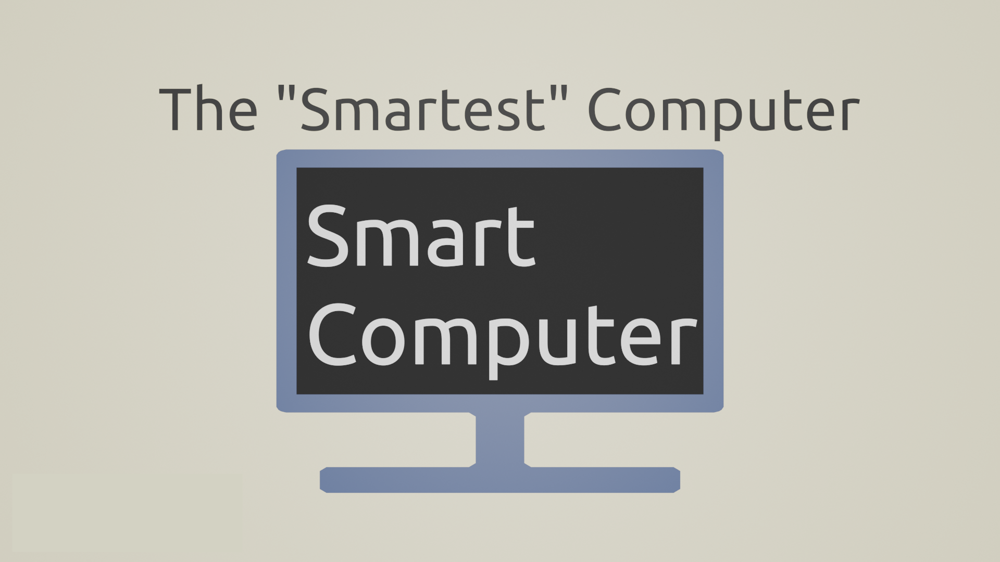

artstudio23.org
This is a website I coded (from scratch) for my art teacher, Mr. Jeff. Check out the website here!
Repo here!
This is a website I coded (from scratch) for my art teacher, Mr. Jeff. Check out the website here!
Repo here!
/* THIS IS SOME CSS I WROTE */
.logoWrapper {
display: -webkit-box;
display: -ms-flexbox;
display: flex;
-ms-flex-align: center;
align-items: center;
margin-left: 35px;
margin-top: 13px;
height: 100px;
width: auto;
}
.logo {
-o-transition: 0.3s;
transition: 0.3s;
animation: fadeInLeft;
animation-duration: var(--anim-dur);
height: calc(1.472vw + 70px);
width: auto;
}
.logo:hover {
scale: 1.02;
}
.topBar {
-o-transition: 0.6s;
transition: 0.6s;
z-index: 2;
position: fixed;
height: 125px;
width: 100%;
left: 0px;
top: 0px;
background-color: rgba(43, 43, 43, 0.577);
}
.topBarTextWrapper {
position: fixed;
right: 15px;
font-size: calc(12px + 0.9vw);
margin-top: 3px;
font-family: Titillium-SemiBold;
animation: fadeInRight;
animation-duration: var(--anim-dur);
}
@media screen and (max-width: 987px) {
.topBarTextWrapper {
visibility: hidden;
opacity: 0;
}
}

Kyanite
A BASH script to customize Ubuntu! Includes options for installing specific utilities and features a progress bar (that sometimes doesn't work)
Repo here!
A BASH script to customize Ubuntu! Includes options for installing specific utilities and features a progress bar (that sometimes doesn't work)
Repo here!
#!/usr/bin/env bash
# INITIATE STUFF (very vague i know)
source ./prog_bar.sh # Get progress bar code
enable_trapping # Enable trapping for progress bar (check prog_bar.sh for more info)
# Colors
red=`tput setaf 1`
green=`tput setaf 2`
reset=`tput sgr0`
bold=`tput bold`
#–––––––––OPTION SELECTIONS––––––––––
if [ ${1:-pass} = "-r" ]
then
installRazer=true
normalInstall=true
elif [ ${1:-pass} = "-p" ]
then
installPiper=true
normalInstall=true
elif [ ${1:-pass} = "-switchgraphics" ]
then
installSwitchgraphics=true
normalInstall=true
elif [ ${1:-pass} = "-nd" ]
then
installNvidiaDrivers=true
normalInstall=true
else
normalInstall=true
fi
if [ ${2:-pass} = "-r" ]
then
installRazer=true
normalInstall=true
elif [ ${2:-pass} = "-p" ]
then
installPiper=true
normalInstall=true
elif [ ${2:-pass} = "-switchgraphics" ]
then
installSwitchgraphics=true
normalInstall=true
elif [ ${2:-pass} = "-nd" ]
then
installNvidiaDrivers=true
normalInstall=true
else
normalInstall=true
fi
if [ ${3:-pass} = "-r" ]
then
installRazer=true
normalInstall=true
elif [ ${3:-pass} = "-p" ]
then
installPiper=true
normalInstall=true
elif [ ${3:-pass} = "-switchgraphics" ]
then
installSwitchgraphics=true
normalInstall=true
elif [ ${3:-pass} = "-nd" ]
then
installNvidiaDrivers=true
normalInstall=true
else
normalInstall=true
fi
if [ ${4:-pass} = "-r" ]
then
installRazer=true
normalInstall=true
elif [ ${4:-pass} = "-p" ]
then
installPiper=true
normalInstall=true
elif [ ${4:-pass} = "-switchgraphics" ]
then
installSwitchgraphics=true
normalInstall=true
elif [ ${4:-pass} = "-nd" ]
then
installNvidiaDrivers=true
normalInstall=true
else
normalInstall=true
fi
if [ ${1:-pass} = "-h" ]
then
installNvidiaDrivers=false
installPiper=false
installRazer=false
installSwitchgraphics=false
normalInstall=false
echo "Help stuff"
fi
#–––––––––––BEGIN PROCESS––––––––––––
#–––––––––––BASE INSTALLS––––––––––––
if [ "$normalInstall" = true ]
then
echo -e "${green}${bold}\n\nAre you SURE you want to install all the application and utilities listed in the README.md? (Yes/No)${reset}"
read install
if [ "$install" = "Yes" ]
then
setup_scroll_area
true
else
exit
fi
if [ "$installRazer" = true ]
then
echo -e "${green}${bold}\n\nWill Install Razer Software (Polychromatic)\n\n${reset}"
fi
if [ "$installPiper" = true ]
then
echo -e "${green}${bold}\n\nWill Install Piper Gaming Mouse\n\n${reset}"
fi
if [ "$installSwitchgraphics" = true ]
then
echo -e "${green}${bold}\n\nWill Install System76 GPU Switching\n\n${reset}"
fi
if [ "$installNvidiaDrivers" = true ]
then
echo -e "${green}${bold}\n\nWill Install Nvidia Drivers\n\n${reset}"
fi
# –––––––––––––––––––––––––––––––––––––––––––––––––––––––––––––––––––––––––––––––––––––––––––––––––––
draw_progress_bar 0
# UPDATE AND UPGRADE
echo -e "${green}${bold}\n\nUpdating\n\n${reset}"
sudo apt-get update
draw_progress_bar 3
echo -e "${green}${bold}\n\nUpgrading\n\n${reset}"
sudo apt-get upgrade
draw_progress_bar 7
# CLI TOOLS
echo -e "${green}${bold}\n\nInstalling git, wget, snapd, cmatrix, dconf-cli, dconf-editor, gnome-tweak-tool, zip, unzip, autohidetopbar, ffmpeg and hwinfo\n\n${reset}"
sudo apt install git wget snapd cmatrix dconf-cli dconf-editor gnome-tweak-tool zip unzip gnome-shell-extension-autohidetopbar hwinfo ffmpeg
echo -e "${green}${bold}\n\nAdding apt-repository universe\n\n${reset}"
sudo add-apt-repository universe
draw_progress_bar 10
# INSTALL ZOOM
echo -e "${green}${bold}\n\nInstalling Zoom\n\n${reset}"
cd ~/Downloads/
wget https://zoom.us/client/latest/zoom_amd64.deb
sudo apt install ./zoom_amd64.deb
rm -rf zoom_amd64.deb
cd
draw_progress_bar 21
# INSTALL BARRIER
echo -e "${green}${bold}\n\nInstalling Barrier\n\n${reset}"
sudo snap install barrier
draw_progress_bar 27
# INSTALL BLENDER
echo -e "${green}${bold}\n\nInstalling Blender\n\n${reset}"
sudo snap install blender --classic
draw_progress_bar 32
# INSTALL PULSEEFFECTS
echo -e "${green}${bold}\n\nInstalling PulseEffects\n\n${reset}"
sudo add-apt-repository ppa:mikhailnov/pulseeffects
sudo apt install pulseaudio pulseeffects --install-recommends
draw_progress_bar 40
# INSTALL VISUAL STUDIO CODE
echo -e "${green}${bold}\n\nInstalling VSCode\n\n${reset}"
sudo snap install code --classic
draw_progress_bar 51
# INSTALL OBS
echo -e "${green}${bold}\n\nInstalling OBS\n\n${reset}"
sudo add-apt-repository ppa:obsproject/obs-studio
sudo apt install obs-studio
draw_progress_bar 63
# INSTALL THEMES
# INSTALL APPS THEME
echo -e "${green}${bold}\n\nInstalling Flat-Remix-GTK Application Themes\n\n${reset}"
sudo add-apt-repository ppa:daniruiz/flat-remix
sudo apt install flat-remix-gtk
gsettings set org.gnome.desktop.interface gtk-theme 'Flat-Remix-GTK-Blue-Dark-Solid'
# INSTALL CURSOR THEME
echo -e "${green}${bold}\n\nInstalling WhiteSur-cursor Theme\n\n${reset}"
cd Downloads
git clone https://github.com/vinceliuice/WhiteSur-cursors.git
cd WhiteSur-cursors
sudo ./install.sh
gsettings set org.gnome.desktop.interface cursor-theme 'WhiteSur-cursors'
cd
# INSTALL GNOME TERMINAL THEME
echo -e "${green}${bold}\n\nInstalling Gnome Terminal Dracula Theme\n\n${reset}"
cd Downloads
git clone https://github.com/dracula/gnome-terminal
cd gnome-terminal
./install.sh
cd
draw_progress_bar 67
# CHANGING DOCK-TO-DOCK SETTINGS
echo -e "${green}${bold}\n\nChanging Dock-to-Dock Settings\n\n${reset}"
gsettings set org.gnome.shell.extensions.dash-to-dock extend-height false
gsettings set org.gnome.shell.extensions.dash-to-dock dock-position BOTTOM
gsettings set org.gnome.shell.extensions.dash-to-dock transparency-mode FIXED
gsettings set org.gnome.shell.extensions.dash-to-dock transparency 0.3
gsettings set org.gnome.shell.extensions.dash-to-dock dash-max-icon-size 56
gsettings set org.gnome.shell.extensions.dash-to-dock unity-backlit-items true
draw_progress_bar 78
# CHANGE SCROLL DIRECTION
echo -e "${green}${bold}\n\nChanging Scroll Direction\n\n${reset}"
gsettings set org.gnome.desktop.peripherals.touchpad natural-scroll true
echo -e "${green}${bold}\n\nTouchpad Scroll Direction Changed\n\n${reset}"
gsettings set org.gnome.desktop.peripherals.mouse natural-scroll true
echo -e "${green}${bold}\n\nMouse Scroll Direction Changed\n\n${reset}"
draw_progress_bar 80
# CHANGE WALLPAPER
echo -e "${green}${bold}\n\nChanging Wallpaper\n\n${reset}"
cd Pictures
wget https://github.com/Hello9999901/Customized-Ubuntu/raw/main/Media/abstract-smoke.jpg
gsettings set org.gnome.desktop.background picture-uri 'file://~/Pictures/abstract-smoke.jpg'
cd
draw_progress_bar 86
# CHANGE MIN, MAX, CLOSE POSITION FROM RIGHT TO LEFT
echo -e "${green}${bold}\n\nChanging Position of Window (Close, Min, Max) Buttons From Right to Left\n\n${reset}"
gsettings set org.gnome.desktop.wm.preferences button-layout close,minimize,maximize:
draw_progress_bar 91
# ADD WhiteSur FIREFOX THEME
echo -e "${green}${bold}\n\Adding WhiteSur Firefox Theme into Downloads Folder\n\n${reset}"
cd Downloads
git clone https://github.com/vinceliuice/WhiteSur-gtk-theme.git
mv 'WhiteSur-gtk-theme/src/other/firefox/chrome/' 'Downloads/'
rm -rf WhiteSur-gtk-theme
mv Downloads chrome
draw_progress_bar 99
# AUTO-HIDE DOCK
echo -e "${green}${bold}\n\Auto-hide the Dock\n\n${reset}"
gsettings set org.gnome.shell.extensions.dash-to-dock dock-fixed false
draw_progress_bar 100
destroy_scroll_area
fi
#––––––––––––OPTIONAL INSTALLS––––––––––––––
if [ "$installRazer" = true ]
then
enable_trapping
setup_scroll_area
draw_progress_bar 0
echo -e "${green}${bold}\n\nInstalling Razer Software (Polychromatic)\n\n${reset}"
# Install Linux-Headers
sudo apt install linux-headers-5.8.0-45-lowlatency
draw_progress_bar 30
# Install OpenRazer Daemon
sudo add-apt-repository ppa:openrazer/stable
draw_progress_bar 50
sudo apt install openrazer-meta
draw_progress_bar 80
# Install Polychromatic GUI
sudo add-apt-repository ppa:polychromatic/stable
draw_progress_bar 90
sudo apt install polychromatic
draw_progress_bar 100
destroy_scroll_area
fi
if [ "$installPiper" = true ]
then
enable_trapping
setup_scroll_area
draw_progress_bar 0
echo -e "${green}${bold}\n\nInstalling Piper Gaming Mouse Software\n\n${reset}"
sudo apt install piper
draw_progress_bar 100
destroy_scroll_area
fi
if [ "$installSwitchgraphics" = true ]
then
enable_trapping
setup_scroll_area
draw_progress_bar 0
echo -e "${green}${bold}\n\nInstalling System76 GPU Switching Software\n\n${reset}"
sudo apt-add-repository ppa:system76-dev/stable
draw_progress_bar 50
sudo apt install gnome-shell-extension-system76-power system76-power
draw_progress_bar 100
destroy_scroll_area
fi
if [ "$installNvidiaDrivers" = true ]
then
enable_trapping
setup_scroll_area
draw_progress_bar 0
echo -e "${green}${bold}\n\nINSTALL NVIDIA DRIVERS\n\n${reset}"
sudo ubuntu-drivers autoinstall
draw_progress_bar 100
destroy_scroll_area
fi
# REBOOT (MUST BE LAST STEP)
if [ "$normalInstall" = true ]
then
echo -e "${green}${bold}\n\nDo you want to reboot now? (Yes/No)${reset}"
read reboot
if [ "$reboot" = "Yes" ]
then
echo -e "${green}${bold}\n\nREBOOTING\n\n${reset}"
sudo reboot
else
echo -e "${green}${bold}\n\nThank You for Using Byran Technologies Applications! Please Restart to Your Closest Convenience.${reset}"
fi
else
true
fi
macOS-E
A simple Python3 tkinter utility inspired by the system profiler CPU-Z of Windows.
Repo here!
A simple Python3 tkinter utility inspired by the system profiler CPU-Z of Windows.
Repo here!
import os
import tkinter as tk
import platform
action = tk.Tk()
osx = platform.platform()
mac = "macOS" in osx
if mac == True:
pass
else:
exit()
action.title("MacOS-E")
action.resizable(width=False, height=False)
hardware = os.popen("system_profiler SPHardwareDataType ").read()
sw = os.popen("sw_vers").read()
cpumod = os.popen("sysctl -a | grep machdep.cpu.brand_string").read()
xz = cpumod.split(":")
cpu = xz[1]
y = (hardware.rstrip().strip().split("\n"))
y.remove("Hardware:")
y.remove (" Hardware Overview:")
y.pop(0)
model = y[1].strip()
modelID = y[2].strip()
cpuname = y[3].strip()
cpuspeed = y[4].strip()
cores = y[6].strip()
L2cache = y[7].strip()
L3cache = y[8].strip()
hyperthread = y[9].strip()
ram = y[10].strip()
romv = y[11].strip()
smcv = y[12].strip()
sw_vers = sw.strip().rstrip()
abmodelID = modelID.strip("Model Identifier")
abmodelID = abmodelID.strip(": ")
print (abmodelID)
#MACBOOK
if abmodelID == ("MacBook10,1"):
modelInfo = ("MacBook (Retina, 12-inch, 2017)")
elif abmodelID == ("MacBook9,1"):
modelInfo = ("MacBook (Retina, 12-inch, Early 2016)")
elif abmodelID == ("MacBook8,1"):
modelInfo = ("MacBook (Retina, 12-inch, Early 2015)")
elif abmodelID == ("MacBook8,1"):
modelInfo = ("MacBook (13-inch, Mid 2010)")
elif abmodelID == ("MacBook6,1"):
modelInfo = ("MacBook (13-inch, Late 2009)")
elif abmodelID == ("MacBook5,2"):
modelInfo = ("MacBook (13-inch, Early/Mid 2009)")
#MACBOOK PRO
elif abmodelID == ("MacBookPro17,1"):
modelInfo = ("MacBook Pro (13-inch, M1, 2020)")
elif abmodelID == ("MacBookPro16,3"):
modelInfo = ("MacBook Pro (13-inch, 2020, 2 Thunderbolt 3 Ports)")
elif abmodelID == ("MacBookPro16,2"):
modelInfo = ("MacBook Pro (13-inch, 2020, 4 Thunderbolt 3 Ports)")
elif abmodelID == ("MacBookPro16,1"):
modelInfo = ("MacBook Pro (16-inch, 2019)")
elif abmodelID == ("MacBookPro16,4"):
modelInfo = ("MacBook Pro (16-inch, 2019)")
elif abmodelID == ("MacBookPro15,4"):
modelInfo = ("MacBook Pro (13-inch, 2019, 2 Thunderbolt 3 Ports)")
elif abmodelID == ("MacBookPro15,1"):
modelInfo = ("MacBook Pro (15-inch, 2019)")
elif abmodelID == ("MacBookPro15,3"):
modelInfo = ("MacBook Pro (15-inch, 2019)")
elif abmodelID == ("MacBookPro15,2"):
modelInfo = ("MacBook Pro (13-inch, 2019, 4 Thunderbolt 3 Ports)")
elif abmodelID == ("MacBookPro15,1"):
modelInfo = ("MacBook Pro (15-inch, 2018)")
elif abmodelID == ("MacBookPro15,2"):
modelInfo = ("MacBook Pro (13-inch, 2018, 4 Thunderbolt 3 Ports)")
elif abmodelID == ("MacBookPro14,3"):
modelInfo = ("MacBook Pro (15-inch, 2017)")
elif abmodelID == ("MacBookPro14,2"):
modelInfo = ("MacBook Pro (13-inch, 2017, 4 Thunderbolt 3 Ports)")
elif abmodelID == ("MacBookPro14,1"):
modelInfo = ("MacBook Pro (13-inch, 2017, 2 Thunderbolt 3 Ports)")
elif abmodelID == ("MacBookPro13,3"):
modelInfo = ("MacBook Pro (15-inch, 2016)")
elif abmodelID == ("MacBookPro13,2"):
modelInfo = ("MacBook Pro (13-inch, 2016, 4 Thunderbolt 3 Ports)")
elif abmodelID == ("MacBookPro13,1"):
modelInfo = ("MacBook Pro (13-inch, 2016, 2 Thunderbolt 3 Ports)")
elif abmodelID == ("MacBookPro11,4"):
modelInfo = ("MacBook Pro (Retina, 15-inch, Mid 2015)")
elif abmodelID == ("MacBookPro11,5"):
modelInfo = ("MacBook Pro (Retina, 15-inch, Mid 2015)")
elif abmodelID == ("MacBookPro12,1"):
modelInfo = ("MacBook Pro (Retina, 13-inch, Early 2015)")
elif abmodelID == ("MacBookPro11,2"):
modelInfo = ("MacBook Pro (Retina, 15-inch, Early 2014)")
elif abmodelID == ("MacBookPro11,3"):
modelInfo = ("MacBook Pro (Retina, 15-inch, Early 2014)")
elif abmodelID == ("MacBookPro11,1"):
modelInfo = ("MacBook Pro (Retina, 13-inch, Mid 2014)")
elif abmodelID == ("MacBookPro11,2"):
modelInfo = ("MacBook Pro (Retina, 15-inch, Late 2013)")
elif abmodelID == ("MacBookPro11,3"):
modelInfo = ("MacBook Pro (Retina, 15-inch, Late 2013)")
elif abmodelID == ("MacBookPro11,1"):
modelInfo = ("MacBook Pro (Retina, 13-inch, Late 2013)")
elif abmodelID == ("MacBookPro10,1"):
modelInfo = ("MacBook Pro (Retina, 15-inch, Early 2013)")
elif abmodelID == ("MacBookPro10,2"):
modelInfo = ("MacBook Pro (Retina, 13-inch, Early 2013)")
elif abmodelID == ("MacBookPro10,2"):
modelInfo = ("MacBook Pro (Retina, 13-inch, Late 2012)")
elif abmodelID == ("MacBookPro10,1"):
modelInfo = ("MacBook Pro (Retina, 15-inch, Mid 2012)")
elif abmodelID == ("MacBookPro9,1"):
modelInfo = ("MacBook Pro (Retina, 15-inch, Mid 2012)")
elif abmodelID == ("MacBookPro9,2"):
modelInfo = ("MacBook Pro (13-inch, Mid 2012)")
elif abmodelID == ("MacBookPro8,3"):
modelInfo = ("MacBook Pro (17-inch, Late 2011)")
elif abmodelID == ("MacBookPro8,2"):
modelInfo = ("MacBook Pro (15-inch, Late 2011)")
elif abmodelID == ("MacBookPro8,1"):
modelInfo = ("MacBook Pro (13-inch, Late 2011)")
elif abmodelID == ("MacBookPro8,3"):
modelInfo = ("MacBook Pro (17-inch, Early 2011)")
elif abmodelID == ("MacBookPro8,2"):
modelInfo = ("MacBook Pro (15-inch, Early 2011)")
elif abmodelID == ("MacBookPro8,1"):
modelInfo = ("MacBook Pro (13-inch, Early 2011)")
elif abmodelID == ("MacBookPro6,1"):
modelInfo = ("MacBook Pro (17-inch, Mid 2010)")
elif abmodelID == ("MacBookPro6,2"):
modelInfo = ("MacBook Pro (15-inch, Mid 2010)")
elif abmodelID == ("MacBookPro7,1"):
modelInfo = ("MacBook Pro (13-inch, Mid 2010)")
elif abmodelID == ("MacBookPro5,2"):
modelInfo = ("MacBook Pro (17-inch, Mid 2009)")
elif abmodelID == ("MacBookPro5,3"):
modelInfo = ("MacBook Pro (15-inch, Mid 2009)")
elif abmodelID == ("MacBookPro5,3"):
modelInfo = ("MacBook Pro (15-inch, 2.53GHz, Mid 2009)")
elif abmodelID == ("MacBookPro5,5"):
modelInfo = ("MacBook Pro (13-inch, Mid 2009)")
elif abmodelID == ("MacBookPro5,2"):
modelInfo = ("MacBook Pro (13-inch, Early 2009)")
elif abmodelID == ("MacBookPro5,1"):
modelInfo = ("MacBook Pro (15-inch, Early 2008)")
elif abmodelID == ("MacBookPro4,1"):
modelInfo = ("MacBook Pro (17-inch, Early 2008)")
elif abmodelID == ("MacBookPro4,1"):
modelInfo = ("MacBook Pro (15-inch, Early 2008)")
#MACBOOK AIR
elif abmodelID == ("MacBookAir10,1"):
modelInfo = ("MacBookAir (M1, 2020)")
elif abmodelID == ("MacBookAir9,1"):
modelInfo = ("MacBookAir (Retina, 13-inch, 2020)")
elif abmodelID == ("MacBookAir8,2"):
modelInfo = ("MacBookAir (Retina, 13-inch, 2019)")
elif abmodelID == ("MacBookAir8,1"):
modelInfo = ("MacBookAir (Retina, 13-inch, 2018)")
elif abmodelID == ("MacBookAir7,2"):
modelInfo = ("MacBookAir (13-inch, 2017)")
elif abmodelID == ("MacBookAir7,2"):
modelInfo = ("MacBookAir (13-inch, Early 2015)")
else:
pass
modelInfo = ("""Model Information: """ + modelInfo)
tk.Label(action, text="MacOS-E: macOS's CPU-Z \n", font = "Monaco 40").grid(sticky = "N")
tk.Label(action, text=cpu.strip().rstrip(), font = "Monaco 25").grid(sticky = "w")
tk.Label(action, text=cpuname, font = "Monaco 25").grid(sticky = "w")
tk.Label(action, text=cpuspeed, font = "Monaco 25").grid(sticky = "w")
tk.Label(action, text=hyperthread, font = "Monaco 25").grid(sticky = "w")
tk.Label(action, text=cores, font = "Monaco 25").grid(sticky = "w")
tk.Label(action, text=L2cache, font = "Monaco 25").grid(sticky = "w")
tk.Label(action, text=L3cache, font = "Monaco 25").grid(sticky = "w")
tk.Label(action, text=ram, font = "Monaco 25").grid(sticky = "w")
tk.Label(action, text="\n", font = "Monaco 25").grid(sticky = "w")
tk.Label(action, text=model, font = "Monaco 25").grid(sticky = "w")
tk.Label(action, text=modelID, font = "Monaco 25").grid(sticky = "w")
tk.Label(action, text=modelInfo, font = "Monaco 25").grid(sticky = "w")
tk.Label(action, text=romv, font = "Monaco 25").grid(sticky = "w")
tk.Label(action, text=smcv, font = "Monaco 25").grid(sticky = "w")
tk.Label(action, text="\n", font = "Monaco 25").grid(sticky = "w")
tk.Label(action, text=sw_vers, font = "Monaco 25").grid(sticky = "w")
tk.mainloop()
Terminal Task 2
A app that runs BASH commands with a GUI. I don't think it worked very well after Big Sur. I thought it makes using the terminal easier, but I was young and didn't know much about the bash, terminal and its wonders. But anyways, Python3 tkinter app that may or may not be of any use.
Repo here!
A app that runs BASH commands with a GUI. I don't think it worked very well after Big Sur. I thought it makes using the terminal easier, but I was young and didn't know much about the bash, terminal and its wonders. But anyways, Python3 tkinter app that may or may not be of any use.
Repo here!
import tkinter as tk
import os
action = tk.Tk()
action.title("Terminal Task V0.2")
cask = False
numtask = tk.IntVar()
numtask.set(1)
appnameentry = tk.Entry(action)
diskname = tk.Entry(action)
diskform = tk.Entry(action)
diskID = tk.Entry(action)
pip3inst = tk.Entry(action)
brewapp = tk.Entry(action)
tasks = [
("Open Application"),
("Erase Disk ** CAN ERASE ALL DISKS - USE W/ CAUTION **"),
("pip3 install (Requires Python3)"),
("Homebrew install (Requires Homebrew)"),
("Sleep"),
("Quit Program")
]
def OSrun():
if numtask.get() == 0:
print (appnameentry.get())
os.system('open -a ' + "'" + appnameentry.get().strip() + "'" + ".app")
elif numtask.get() == 1:
print ('Disk ID: ' + diskID.get().strip())
print ('Disk Format: ' + diskform.get().strip())
print ('Disk Name: ' + diskname.get().strip())
os.system ('diskutil eraseDisk '+ diskform.get().strip() + ' ' + diskname.get().strip() + ' ' + """/dev/""" + diskID.get().strip())
elif numtask.get() == 2:
print ('pip3 package: ' + pip3inst.get().strip())
os.system ('pip3 install '+ pip3inst.get().strip())
elif numtask.get() == 3:
if cask == False:
print ('#no cask# homebrew package: ' + brewapp.get().strip())
os.system ('brew install ' + brewapp.get().strip())
def ShowChoice():
print(numtask.get())
if numtask.get() == 6:
exit()
elif numtask.get() == 0:
tk.Label(action, text="""Application Opener:""",
justify = tk.LEFT,
pady = 20).pack(anchor=tk.N)
tk.Label(action, text="App Name:").pack(padx=0, pady=5, side=tk.LEFT)
appnameentry.pack (padx=5, pady=20, side=tk.LEFT)
tk.Button(action, text='Run', command=OSrun).pack (padx=10, pady=30, side=tk.LEFT)
elif numtask.get() == 1:
x = os.popen('diskutil list').read()
tk.Label(action, text="""Disk Erase""",
justify = tk.LEFT,
pady = 20).pack(anchor=tk.N)
tk.Label(action, text="Disk Name").pack (padx=0, pady=5, side=tk.LEFT)
diskname.pack (padx=5, pady=20, side=tk.LEFT)
tk.Label(action, text="Disk Format").pack(padx=10, pady=5, side=tk.LEFT)
diskform.pack (padx=15, pady=20, side=tk.LEFT)
tk.Label(action, text="Disk ID").pack (padx=20, pady=5, side=tk.LEFT)
diskID.pack (padx=25, pady=20, side=tk.LEFT)
tk.Button(action, text='Run', command=OSrun).pack (padx=10, pady=30, side=tk.LEFT)
diskutillist = x
msg = tk.Message(action, text = diskutillist)
msg.config(justify = tk.RIGHT, font=('San Serif', 15))
msg.pack()
elif numtask.get() == 2:
tk.Label(action, text="""pip3 Installer:""",
justify = tk.LEFT,
pady = 20).pack(anchor=tk.N)
tk.Label(action, text="pip3 package name:").pack(padx=0, pady=5, side=tk.LEFT)
pip3inst.pack (padx=5, pady=20, side=tk.LEFT)
tk.Button(action, text='Run', command=OSrun).pack (padx=10, pady=30, side=tk.LEFT)
elif numtask.get() == 3:
tk.Label(action, text="""Homebrew Package Installer:""",
justify = tk.LEFT,
pady = 20).pack(anchor=tk.N)
tk.Label(action, text="Homebrew Package Name:").pack(padx=0, pady=5, side=tk.LEFT)
brewapp.pack (padx=5, pady=20, side=tk.LEFT)
tk.Button(action, text='Run', command=OSrun).pack (padx=10, pady=30, side=tk.LEFT)
elif numtask.get() == 4:
os.system('pmset sleepnow')
tk.Label(action, text="""Welcome to Terminal Tasks V0.2 - First GUI program by Hello9999901""",
justify = tk.LEFT,
pady = 5).pack()
tk.Label(action, text="""There may be bugs. Please use responsibly. Thank you and Enjoy!""",
justify = tk.LEFT,
pady = 5).pack()
tk.Label(action, text="""Choose Terminal Task:""",
justify = tk.LEFT,
pady = 5).pack()
for val, language in enumerate(tasks): #id framework
tk.Radiobutton(action,
text=language,
indicatoron = 0,
width = 50,
pady = 20,
variable=numtask,
command=ShowChoice,
value=val).pack(anchor=tk.W)
action.mainloop() #main loop

Smart Computer
Just a simple Python3 tkinter app that generates 4 random words.
Repo here!
Just a simple Python3 tkinter app that generates 4 random words.
Repo here!
import random
import tkinter as tk
action = tk.Tk()
action.title("Smart Computer")
def generate():
tk.Label(action, text="\t\t\t\t\t\t\t\t", font = "Arial 25").grid(row=2, sticky=tk.N)
word_list = []
with open('/Users/byranhuang/Documents/words.txt') as f: # or whatever the wordlist is saved as
for line in f.readlines():
index, word = line.strip().split('\t')
word_list.append(word)
x = (" ")
x = (" ").join([word_list[random.randrange(0, len(word_list))] for i in range(4)])
tk.Label(action, text=x, font = "Arial 25").grid(row=2, sticky=tk.N)
tk.Label(action, text="Smart Computer", font = "Arial 50").grid(row=0, sticky=tk.N)
tk.Button(action, text='Talk to Smart Computer', font = "Arial 25", command = generate).grid(row=1, column=0, sticky=tk.N)
tk.mainloop()